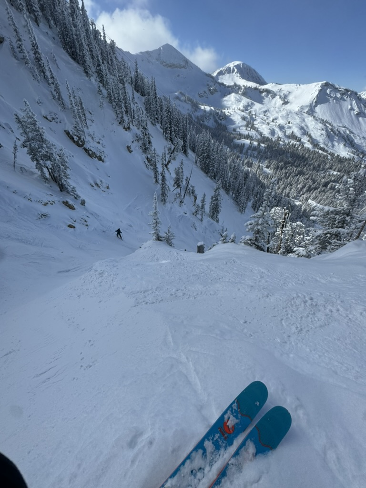

My background: I started skiing when I was 7 years old, I first learned at a
Pocono
Mountain in PA, called
Blue Mountain. When my skis first touched the snow, I knew I had a lifelong hobby that I
loved. Over
the
next 12 years, I have skied frequently and at many different places. Skiing has always been
an
escape
from the real world because my mind is present at the task. I’ve skied many different types
of skis,
boots, and bindings, which has given me a great understanding of gear. At every different
level of
skiing,
my equipment has changed, and I understand what every type of skier needs. Along with skiing
different
skis, I have also changed my type of skiing many times. With all of this knowledge I have
gained
over the
years, I built this website to share it with you and help you become a better skier